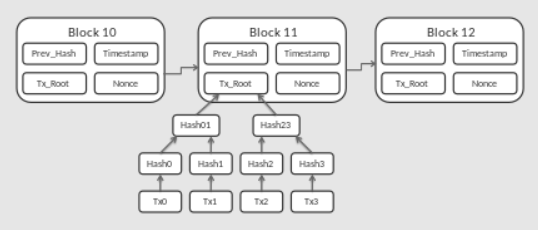

From Wikipedia, the free encyclopedia
For other uses, see Block chain (disambiguation).
A blockchain is a type of distributed ledger technology (DLT) that consists comprise of growing list of records, called blocks, that are securely linked together using cryptography.[1][2][3][4] Each block contains a cryptographic hash of the previous block, a timestamp, and transaction data (generally represented as a Merkle tree, where data nodes are represented by leaves). The timestamp proves that the transaction data existed when the block was created. Since each block contains information about the previous block, they effectively form a chain (compare linked list data structure), with each additional block linking to the ones before it. Consequently, blockchain transactions are irreversible in that, once they are recorded, the data in any given block cannot be altered retroactively without altering all subsequent blocks.
Blockchains are typically managed by a peer-to-peer (P2P) computer network for use as a public distributed ledger, where nodes collectively adhere to a consensus algorithm protocol to add and validate new transaction blocks. Although blockchain records are not unalterable, since blockchain forks are possible, blockchains may be considered secure by design and exemplify a distributed computing system with high Byzantine fault tolerance.[5]
2H2 + O2 = H2O

Cryptographer David Chaum first proposed a blockchain-like protocol in his 1982 dissertation "Computer Systems Established, Maintained, and Trusted by Mutually Suspicious Groups."[11] Further work on a cryptographically secured chain of blocks was described in 1991 by Stuart Haber and W. Scott Stornetta.[4][12] They wanted to implement a system wherein document timestamps could not be tampered with. In 1992, Haber, Stornetta, and Dave Bayer incorporated Merkle trees into the design, which improved its efficiency by allowing several document certificates to be collected into one block.[4][13] Under their company Surety, their document certificate hashes have been published in The New York Times every week since 1995.[14]
The first decentralized blockchain was conceptualized by a person (or group of people) known as Satoshi Nakamoto in 2008. Nakamoto improved the design in an important way using a Hashcash-like method to timestamp blocks without requiring them to be signed by a trusted party and introducing a difficulty parameter to stabilize the rate at which blocks are added to the chain.[4] The design was implemented the following year by Nakamoto as a core component of the cryptocurrency bitcoin, where it serves as the public ledger for all transactions on the network.[3]
In August 2014, the bitcoin blockchain file size, containing records of all transactions that have occurred on the network, reached 20 GB (gigabytes).[15] In January 2015, the size had grown to almost 30 GB, and from January 2016 to January 2017, the bitcoin blockchain grew from 50 GB to 100 GB in size. The ledger size had exceeded 200 GB by early 2020.[16]
The words block and chain were used separately in Satoshi Nakamoto's original paper, but were eventually popularized as a single word, blockchain, by 2016.[17]
According to Accenture, an application of the diffusion of innovations theory suggests that blockchains attained a 13.5% adoption rate within financial services in 2016, therefore reaching the early adopters' phase.[18] Industry trade groups joined to create the Global Blockchain Forum in 2016, an initiative of the Chamber of Digital Commerce.
In May 2018, Gartner found that only 1% of CIOs indicated any kind of blockchain adoption within their organisations, and only 8% of CIOs were in the short-term "planning or [looking at] active experimentation with blockchain".[19] For the year 2019 Gartner reported 5% of CIOs believed blockchain technology was a 'game-changer' for their business.[20]

A blockchain is a decentralized, distributed, and often public, digital ledger consisting of records called blocks that are used to record transactions across many computers so that any involved block cannot be altered retroactively, without the alteration of all subsequent blocks.[3][21] This allows the participants to verify and audit transactions independently and relatively inexpensively.[22] A blockchain database is managed autonomously using a peer-to-peer network and a distributed timestamping server. They are authenticated by mass collaboration powered by collective self-interests.[23] Such a design facilitates robust workflow where participants' uncertainty regarding data security is marginal. The use of a blockchain removes the characteristic of infinite reproducibility from a digital asset. It confirms that each unit of value was transferred only once, solving the long-standing problem of double-spending. A blockchain has been described as a value-exchange protocol.[24] A blockchain can maintain title rights because, when properly set up to detail the exchange agreement, it provides a record that compels offer and acceptance.[citation needed]
Logically, a blockchain can be seen as consisting of several layers:[25]
Blocks hold batches of valid transactions that are hashed and encoded into a Merkle tree.[3] Each block includes the cryptographic hash of the prior block in the blockchain, linking the two. The linked blocks form a chain.[3] This iterative process confirms the integrity of the previous block, all the way back to the initial block, which is known as the genesis block (Block 0).[27][28] To assure the integrity of a block and the data contained in it, the block is usually digitally signed.[29]
Sometimes separate blocks can be produced concurrently, creating a temporary fork. In addition to a secure hash-based history, any blockchain has a specified algorithm for scoring different versions of the history so that one with a higher score can be selected over others. Blocks not selected for inclusion in the chain are called orphan blocks.[28] Peers supporting the database have different versions of the history from time to time. They keep only the highest-scoring version of the database known to them. Whenever a peer receives a higher-scoring version (usually the old version with a single new block added) they extend or overwrite their own database and retransmit the improvement to their peers. There is never an absolute guarantee that any particular entry will remain in the best version of history forever. Blockchains are typically built to add the score of new blocks onto old blocks and are given incentives to extend with new blocks rather than overwrite old blocks. Therefore, the probability of an entry becoming superseded decreases exponentially[30] as more blocks are built on top of it, eventually becoming very low.[3][31]: ch. 08 [32] For example, bitcoin uses a proof-of-work system, where the chain with the most cumulative proof-of-work is considered the valid one by the network. There are a number of methods that can be used to demonstrate a sufficient level of computation. Within a blockchain the computation is carried out redundantly rather than in the traditional segregated and parallel manner.[33]
The block time is the average time it takes for the network to generate one extra block in the blockchain. Some blockchains create a new block as frequently as every five seconds.[34] By the time of block completion, the included data becomes verifiable. In cryptocurrency, this is practically when the transaction takes place, so a shorter block time means faster transactions. The block time for Ethereum is set to between 14 and 15 seconds, while for bitcoin it is on average 10 minutes.[35]
This section is an excerpt from Fork (blockchain) § Hard fork. [edit]
A hard fork is a rule change such that the software validating according to the old rules will see the blocks produced according to the new rules as invalid. In case of a hard fork, all nodes meant to work in accordance with the new rules need to upgrade their software. If one group of nodes continues to use the old software while the other nodes use the new software, a permanent split can occur.
For example, Ethereum was hard-forked in 2016 to "make whole" the investors in The DAO, which had been hacked by exploiting a vulnerability in its code. In this case, the fork resulted in a split creating Ethereum and Ethereum Classic chains. In 2014 the Nxt community was asked to consider a hard fork that would have led to a rollback of the blockchain records to mitigate the effects of a theft of 50 million NXT from a major cryptocurrency exchange. The hard fork proposal was rejected, and some of the funds were recovered after negotiations and ransom payment. Alternatively, to prevent a permanent split, a majority of nodes using the new software may return to the old rules, as was the case of bitcoin split on 12 March 2013.[36]
A more recent hard-fork example is of Bitcoin in 2017, which resulted in a split creating Bitcoin Cash.[37] The network split was mainly due to a disagreement in how to increase the transactions per second to accommodate for demand.[38]
By storing data across its peer-to-peer network, the blockchain eliminates a number of risks that come with data being held centrally.[3] The decentralized blockchain may use ad hoc message passing and distributed networking. One risk of a lack of decentralization is a so-called "51% attack" where a central entity can gain control of more than half of a network and can manipulate that specific blockchain record at will, allowing double-spending.[39]
Peer-to-peer blockchain networks lack centralized points of vulnerability that computer crackers can exploit; likewise, they have no central point of failure. Blockchain security methods include the use of public-key cryptography.[40]: 5 A public key (a long, random-looking string of numbers) is an address on the blockchain. Value tokens sent across the network are recorded as belonging to that address. A private key is like a password that gives its owner access to their digital assets or the means to otherwise interact with the various capabilities that blockchains now support. Data stored on the blockchain is generally considered incorruptible.[3]
Every node in a decentralized system has a copy of the blockchain. Data quality is maintained by massive database replication[41] and computational trust. No centralized "official" copy exists and no user is "trusted" more than any other.[40] Transactions are broadcast to the network using the software. Messages are delivered on a best-effort basis. Early blockchains rely on energy-intensive mining nodes to validate transactions,[28] add them to the block they are building, and then broadcast the completed block to other nodes.[31]: ch. 08 Blockchains use various time-stamping schemes, such as proof-of-work, to serialize changes.[42] Later consensus methods include proof of stake.[28] The growth of a decentralized blockchain is accompanied by the risk of centralization because the computer resources required to process larger amounts of data become more expensive.[43]
Open blockchains are more user-friendly than some traditional ownership records, which, while open to the public, still require physical access to view. Because all early blockchains were permissionless, controversy has arisen over the blockchain definition. An issue in this ongoing debate is whether a private system with verifiers tasked and authorized (permissioned) by a central authority should be considered a blockchain.[44][45][46][47][48] Proponents of permissioned or private chains argue that the term "blockchain" may be applied to any data structure that batches data into time-stamped blocks. These blockchains serve as a distributed version of multiversion concurrency control (MVCC) in databases.[49] Just as MVCC prevents two transactions from concurrently modifying a single object in a database, blockchains prevent two transactions from spending the same single output in a blockchain.[50]: 30–31 Opponents say that permissioned systems resemble traditional corporate databases, not supporting decentralized data verification, and that such systems are not hardened against operator tampering and revision.[44][46] Nikolai Hampton of Computerworld said that "many in-house blockchain solutions will be nothing more than cumbersome databases," and "without a clear security model, proprietary blockchains should be eyed with suspicion."[9][51]
An advantage to an open, permissionless, or public, blockchain network is that guarding against bad actors is not required and no access control is needed.[30] This means that applications can be added to the network without the approval or trust of others, using the blockchain as a transport layer.[30]
Bitcoin and other cryptocurrencies currently secure their blockchain by requiring new entries to include proof of work. To prolong the blockchain, bitcoin uses Hashcash puzzles. While Hashcash was designed in 1997 by Adam Back, the original idea was first proposed by Cynthia Dwork and Moni Naor and Eli Ponyatovski in their 1992 paper "Pricing via Processing or Combatting Junk Mail".
In 2016, venture capital investment for blockchain-related projects was weakening in the USA but increasing in China.[52] Bitcoin and many other cryptocurrencies use open (public) blockchains. As of April 2018, bitcoin has the highest market capitalization.
Permissioned blockchains use an access control layer to govern who has access to the network.[53] In contrast to public blockchain networks, validators on private blockchain networks are vetted by the network owner. They do not rely on anonymous nodes to validate transactions nor do they benefit from the network effect.[54] Permissioned blockchains can also go by the name of 'consortium' blockchains.[55] It has been argued that permissioned blockchains can guarantee a certain level of decentralization, if carefully designed, as opposed to permissionless blockchains, which are often centralized in practice.[10]
Nikolai Hampton pointed out in Computerworld that "There is also no need for a '51 percent' attack on a private blockchain, as the private blockchain (most likely) already controls 100 percent of all block creation resources. If you could attack or damage the blockchain creation tools on a private corporate server, you could effectively control 100 percent of their network and alter transactions however you wished."[9] This has a set of particularly profound adverse implications during a financial crisis or debt crisis like the financial crisis of 2007–08, where politically powerful actors may make decisions that favor some groups at the expense of others,[56] and "the bitcoin blockchain is protected by the massive group mining effort. It's unlikely that any private blockchain will try to protect records using gigawatts of computing power — it's time-consuming and expensive."[9] He also said, "Within a private blockchain there is also no 'race'; there's no incentive to use more power or discover blocks faster than competitors. This means that many in-house blockchain solutions will be nothing more than cumbersome databases."[9]
The analysis of public blockchains has become increasingly important with the popularity of bitcoin, Ethereum, litecoin and other cryptocurrencies.[57] A blockchain, if it is public, provides anyone who wants access to observe and analyse the chain data, given one has the know-how. The process of understanding and accessing the flow of crypto has been an issue for many cryptocurrencies, crypto exchanges and banks.[58][59] The reason for this is accusations of blockchain-enabled cryptocurrencies enabling illicit dark market trade of drugs, weapons, money laundering, etc.[60] A common belief has been that cryptocurrency is private and untraceable, thus leading many actors to use it for illegal purposes. This is changing and now specialised tech companies provide blockchain tracking services, making crypto exchanges, law-enforcement and banks more aware of what is happening with crypto funds and fiat-crypto exchanges. The development, some argue, has led criminals to prioritise the use of new cryptos such as Monero.[61][62][63] The question is about the public accessibility of blockchain data and the personal privacy of the very same data. It is a key debate in cryptocurrency and ultimately in the blockchain.[64]
In April 2016, Standards Australia submitted a proposal to the International Organization for Standardization to consider developing standards to support blockchain technology. This proposal resulted in the creation of ISO Technical Committee 307, Blockchain and Distributed Ledger Technologies.[65] The technical committee has working groups relating to blockchain terminology, reference architecture, security and privacy, identity, smart contracts, governance and interoperability for blockchain and DLT, as well as standards specific to industry sectors and generic government requirements.[66][non-primary source needed] More than 50 countries are participating in the standardization process together with external liaisons such as the Society for Worldwide Interbank Financial Telecommunication (SWIFT), the European Commission, the International Federation of Surveyors, the International Telecommunication Union (ITU) and the United Nations Economic Commission for Europe (UNECE).[66]
Many other national standards bodies and open standards bodies are also working on blockchain standards.[67] These include the National Institute of Standards and Technology[68] (NIST), the European Committee for Electrotechnical Standardization[69] (CENELEC), the Institute of Electrical and Electronics Engineers[70] (IEEE), the Organization for the Advancement of Structured Information Standards (OASIS), and some individual participants in the Internet Engineering Task Force[71] (IETF).
Although most of blockchain implementation are decentralized and distributed, Oracle launched a centralized blockchain table feature in Oracle 21c database. The Blockchain Table in Oracle 21c database is a centralized blockchain which provide immutable feature. Compared to decentralized blockchains, centralized blockchains normally can provide a higher throughput and lower latency of transactions than consensus-based distributed blockchains.[72][73]
Currently, there are at least four types of blockchain networks — public blockchains, private blockchains, consortium blockchains and hybrid blockchains.
A public blockchain has absolutely no access restrictions. Anyone with an Internet connection can send transactions to it as well as become a validator (i.e., participate in the execution of a consensus protocol).[74][self-published source?] Usually, such networks offer economic incentives for those who secure them and utilize some type of a Proof of Stake or Proof of Work algorithm.
Some of the largest, most known public blockchains are the bitcoin blockchain and the Ethereum blockchain.
A private blockchain is permissioned.[53] One cannot join it unless invited by the network administrators. Participant and validator access is restricted. To distinguish between open blockchains and other peer-to-peer decentralized database applications that are not open ad-hoc compute clusters, the terminology Distributed Ledger (DLT) is normally used for private blockchains.
A hybrid blockchain has a combination of centralized and decentralized features.[75] The exact workings of the chain can vary based on which portions of centralization and decentralization are used.
A sidechain is a designation for a blockchain ledger that runs in parallel to a primary blockchain.[76][77] Entries from the primary blockchain (where said entries typically represent digital assets) can be linked to and from the sidechain; this allows the sidechain to otherwise operate independently of the primary blockchain (e.g., by using an alternate means of record keeping, alternate consensus algorithm, etc.).[78][better source needed]

Blockchain technology can be integrated into multiple areas. The primary use of blockchains is as a distributed ledger for cryptocurrencies such as bitcoin; there were also a few other operational products that had matured from proof of concept by late 2016.[52] As of 2016, some businesses have been testing the technology and conducting low-level implementation to gauge blockchain's effects on organizational efficiency in their back office.[79]
In 2019, it was estimated that around $2.9 billion were invested in blockchain technology, which represents an 89% increase from the year prior. Additionally, the International Data Corp has estimated that corporate investment into blockchain technology will reach $12.4 billion by 2022.[80] Furthermore, According to PricewaterhouseCoopers (PwC), the second-largest professional services network in the world, blockchain technology has the potential to generate an annual business value of more than $3 trillion by 2030. PwC's estimate is further augmented by a 2018 study that they have conducted, in which PwC surveyed 600 business executives and determined that 84% have at least some exposure to utilizing blockchain technology, which indicts a significant demand and interest in blockchain technology.[81]
In 2019 the BBC World Service radio and podcast series Fifty Things That Made the Modern Economy identified blockchain as a technology that would have far-reaching consequences for economics and society. The economist and Financial Times journalist and broadcaster Tim Harford discussed why the underlying technology might have much wider applications and the challenges that needed to be overcome.[82] First broadcast 29 June 2019.
The number of blockchain wallets quadrupled to 40 million between 2016 and 2020.[83]
A paper published in 2022 discussed the potential use of blockchain technology in sustainable management[84]
Most cryptocurrencies use blockchain technology to record transactions. For example, the bitcoin network and Ethereum network are both based on blockchain. On 8 May 2018 Facebook confirmed that it would open a new blockchain group[85] which would be headed by David Marcus, who previously was in charge of Messenger. Facebook's planned cryptocurrency platform, Libra (now known as Diem), was formally announced on June 18, 2019.[86][87]
The criminal enterprise Silk Road, which operated on Tor, utilized cryptocurrency for payments, some of which the US federal government has seized through research on the blockchain and forfeiture.[88]
Governments have mixed policies on the legality of their citizens or banks owning cryptocurrencies. China implements blockchain technology in several industries including a national digital currency which launched in 2020.[89] To strengthen their respective currencies, Western governments including the European Union and the United States have initiated similar projects.[90]
Blockchain-based smart contracts are proposed contracts that can be partially or fully executed or enforced without human interaction.[91] One of the main objectives of a smart contract is automated escrow. A key feature of smart contracts is that they do not need a trusted third party (such as a trustee) to act as an intermediary between contracting entities — the blockchain network executes the contract on its own. This may reduce friction between entities when transferring value and could subsequently open the door to a higher level of transaction automation.[92] An IMF staff discussion from 2018 reported that smart contracts based on blockchain technology might reduce moral hazards and optimize the use of contracts in general. But "no viable smart contract systems have yet emerged." Due to the lack of widespread use their legal status was unclear.[93][94]
According to Reason, many banks have expressed interest in implementing distributed ledgers for use in banking and are cooperating with companies creating private blockchains,[95][96][97] and according to a September 2016 IBM study, this is occurring faster than expected.[98]
Banks are interested in this technology not least because it has the potential to speed up back office settlement systems.[99] Moreover, as the blockchain industry has reached early maturity institutional appreciation has grown that it is, practically speaking, the infrastructure of a whole new financial industry, with all the implications which that entails.[100]
Banks such as UBS are opening new research labs dedicated to blockchain technology in order to explore how blockchain can be used in financial services to increase efficiency and reduce costs.[101][102]
Berenberg, a German bank, believes that blockchain is an "overhyped technology" that has had a large number of "proofs of concept", but still has major challenges, and very few success stories.[103]
The blockchain has also given rise to initial coin offerings (ICOs) as well as a new category of digital asset called security token offerings (STOs), also sometimes referred to as digital security offerings (DSOs).[104] STO/DSOs may be conducted privately or on public, regulated stock exchange and are used to tokenize traditional assets such as company shares as well as more innovative ones like intellectual property, real estate,[105] art, or individual products. A number of companies are active in this space providing services for compliant tokenization, private STOs, and public STOs.
There have been several different efforts to employ blockchains in supply chain management.
There are several different efforts to offer domain name services via the blockchain. These domain names can be controlled by the use of a private key, which purports to allow for uncensorable websites. This would also bypass a registrar's ability to suppress domains used for fraud, abuse, or illegal content.[121]
Namecoin is a cryptocurrency that supports the ".bit" top-level domain (TLD). Namecoin was forked from bitcoin in 2011. The .bit TLD is not sanctioned by ICANN, instead requiring an alternative DNS root.[121] As of 2015, it was used by 28 websites, out of 120,000 registered names.[122] Namecoin was dropped by OpenNIC in 2019, due to malware and potential other legal issues.[123] Other blockchain alternatives to ICANN include The Handshake Network,[122] EmerDNS, and Unstoppable Domains.[121]
Specific TLDs include ".eth", ".luxe", and ".kred", which are associated with the Ethereum blockchain through the Ethereum Name Service (ENS). The .kred TLD also acts as an alternative to conventional cryptocurrency wallet addresses, as a convenience for transferring cryptocurrency.[124]
Blockchain technology can be used to create a permanent, public, transparent ledger system for compiling data on sales, tracking digital use and payments to content creators, such as wireless users[125] or musicians.[126] The Gartner 2019 CIO Survey reported 2% of higher education respondents had launched blockchain projects and another 18% were planning academic projects in the next 24 months.[127] In 2017, IBM partnered with ASCAP and PRS for Music to adopt blockchain technology in music distribution.[128] Imogen Heap's Mycelia service has also been proposed as a blockchain-based alternative "that gives artists more control over how their songs and associated data circulate among fans and other musicians."[129][130]
New distribution methods are available for the insurance industry such as peer-to-peer insurance, parametric insurance and microinsurance following the adoption of blockchain.[131][132] The sharing economy and IoT are also set to benefit from blockchains because they involve many collaborating peers.[133] The use of blockchain in libraries is being studied with a grant from the U.S. Institute of Museum and Library Services.[134]
Other blockchain designs include Hyperledger, a collaborative effort from the Linux Foundation to support blockchain-based distributed ledgers, with projects under this initiative including Hyperledger Burrow (by Monax) and Hyperledger Fabric (spearheaded by IBM).[135][136][137] Another is Quorum, a permissionable private blockchain by JPMorgan Chase with private storage, used for contract applications.[138]
Oracle introduced a blockchain table feature in its Oracle 21c database.[72][73]
Blockchain is also being used in peer-to-peer energy trading.[139][140][141]
Blockchain could be used in detecting counterfeits by associating unique identifiers to products, documents and shipments, and storing records associated with transactions that cannot be forged or altered.[142][143] It is however argued that blockchain technology needs to be supplemented with technologies that provide a strong binding between physical objects and blockchain systems.[144] The EUIPO established an Anti-Counterfeiting Blockathon Forum, with the objective of "defining, piloting and implementing" an anti-counterfeiting infrastructure at the European level.[145][146] The Dutch Standardisation organisation NEN uses blockchain together with QR Codes to authenticate certificates.[147]
2022 Jan 30 Beijing and Shanghai are among the cities designated by China to trial blockchain applications.[148]
With the increasing number of blockchain systems appearing, even only those that support cryptocurrencies, blockchain interoperability is becoming a topic of major importance. The objective is to support transferring assets from one blockchain system to another blockchain system. Wegner[149] stated that "interoperability is the ability of two or more software components to cooperate despite differences in language, interface, and execution platform". The objective of blockchain interoperability is therefore to support such cooperation among blockchain systems, despite those kinds of differences.
There are already several blockchain interoperability solutions available.[150] They can be classified into three categories: cryptocurrency interoperability approaches, blockchain engines, and blockchain connectors.
Several individual IETF participants produced the draft of a blockchain interoperability architecture.[151]
Some cryptocurrencies use blockchain mining — the peer-to-peer computer computations by which transactions are validated and verified. This requires a large amount of energy. In June 2018 the Bank for International Settlements criticized the use of public proof-of-work blockchains for their high energy consumption.[152][153][154]
Early concern over the high energy consumption was a factor in later blockchains such as Cardano (2017), Solana (2020) and Polkadot (2020) adopting the less energy-intensive proof-of-stake model. Researchers have estimated that Bitcoin consumes 100,000 times as much energy as proof-of-stake networks.[155][156]
In 2021, a study by Cambridge University determined that Bitcoin (at 121 terawatt-hours per year) used more electricity than Argentina (at 121TWh) and the Netherlands (109TWh).[157] According to Digiconomist, one bitcoin transaction required 708 kilowatt-hours of electrical energy, the amount an average U.S. household consumed in 24 days.[158]
In February 2021, U.S. Treasury secretary Janet Yellen called Bitcoin "an extremely inefficient way to conduct transactions", saying "the amount of energy consumed in processing those transactions is staggering".[159] In March 2021, Bill Gates stated that "Bitcoin uses more electricity per transaction than any other method known to mankind", adding "It's not a great climate thing."[160]
Nicholas Weaver, of the International Computer Science Institute at the University of California, Berkeley, examined blockchain's online security, and the energy efficiency of proof-of-work public blockchains, and in both cases found it grossly inadequate.[161][162] The 31TWh-45TWh of electricity used for bitcoin in 2018 produced 17-23 million tonnes of CO2.[163][164] By 2022, the University of Cambridge and Digiconomist estimated that the two largest proof-of-work blockchains, Bitcoin and Ethereum, together used twice as much electricity in one year as the whole of Sweden, leading to the release of up to 120 million tonnes of CO2 each year.[165]
Some cryptocurrency developers are considering moving from the proof-of-work model to the proof-of-stake model.[166]
In October 2014, the MIT Bitcoin Club, with funding from MIT alumni, provided undergraduate students at the Massachusetts Institute of Technology access to $100 of bitcoin. The adoption rates, as studied by Catalini and Tucker (2016), revealed that when people who typically adopt technologies early are given delayed access, they tend to reject the technology.[167] Many universities have founded departments focusing on crypto and blockchain, including MIT, in 2017. In the same year, Edinburgh became "one of the first big European universities to launch a blockchain course", according to the Financial Times.[168]
Motivations for adopting blockchain technology (an aspect of innovation adoptation) have been investigated by researchers. For example, Janssen, et al. provided a framework for analysis,[169] and Koens & Poll pointed out that adoption could be heavily driven by non-technical factors.[170] Based on behavioral models, Li[171] has discussed the differences between adoption at the individual level and organizational levels.
Scholars in business and management have started studying the role of blockchains to support collaboration.[172][173] It has been argued that blockchains can foster both cooperation (i.e., prevention of opportunistic behavior) and coordination (i.e., communication and information sharing). Thanks to reliability, transparency, traceability of records, and information immutability, blockchains facilitate collaboration in a way that differs both from the traditional use of contracts and from relational norms. Contrary to contracts, blockchains do not directly rely on the legal system to enforce agreements.[174] In addition, contrary to the use of relational norms, blockchains do not require a trust or direct connections between collaborators.
The need for internal audits to provide effective oversight of organizational efficiency will require a change in the way that information is accessed in new formats.[176] Blockchain adoption requires a framework to identify the risk of exposure associated with transactions using blockchain. The Institute of Internal Auditors has identified the need for internal auditors to address this transformational technology. New methods are required to develop audit plans that identify threats and risks. The Internal Audit Foundation study, Blockchain and Internal Audit, assesses these factors.[177] The American Institute of Certified Public Accountants has outlined new roles for auditors as a result of blockchain.[178]
In September 2015, the first peer-reviewed academic journal dedicated to cryptocurrency and blockchain technology research, Ledger, was announced. The inaugural issue was published in December 2016.[179] The journal covers aspects of mathematics, computer science, engineering, law, economics and philosophy that relate to cryptocurrencies such as bitcoin.[180][181]
The journal encourages authors to digitally sign a file hash of submitted papers, which are then timestamped into the bitcoin blockchain. Authors are also asked to include a personal bitcoin address on the first page of their papers for non-repudiation purposes.[182]